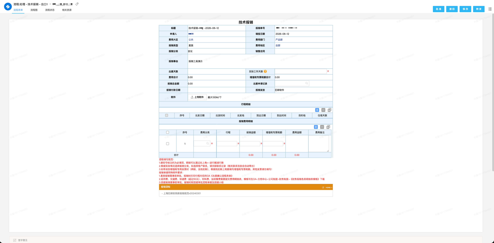
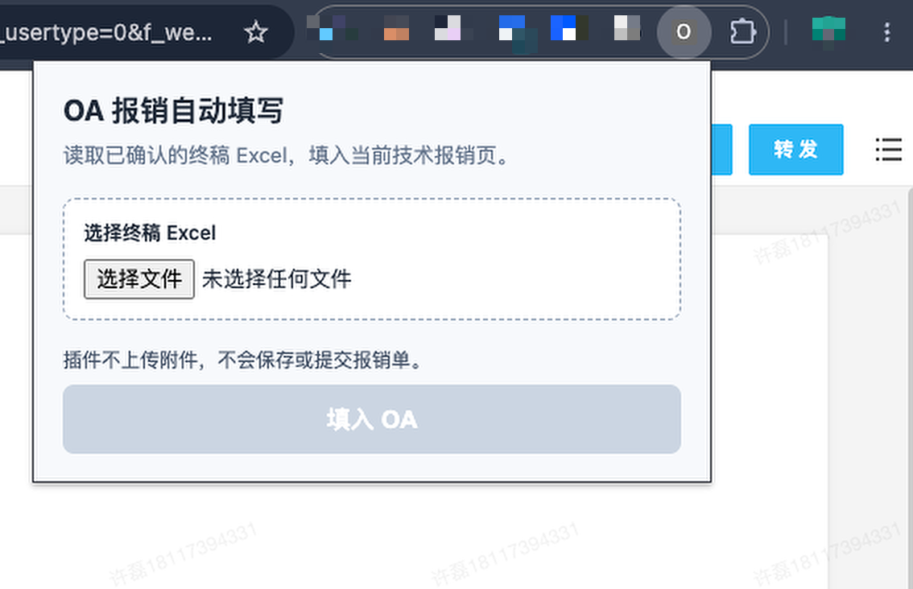
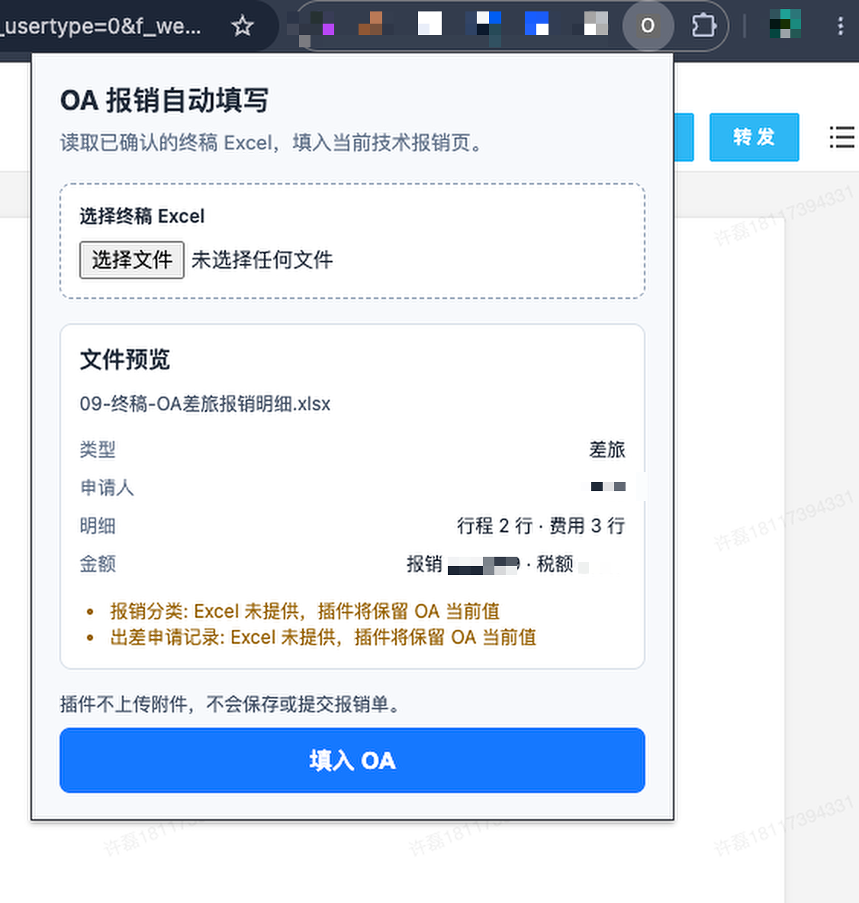
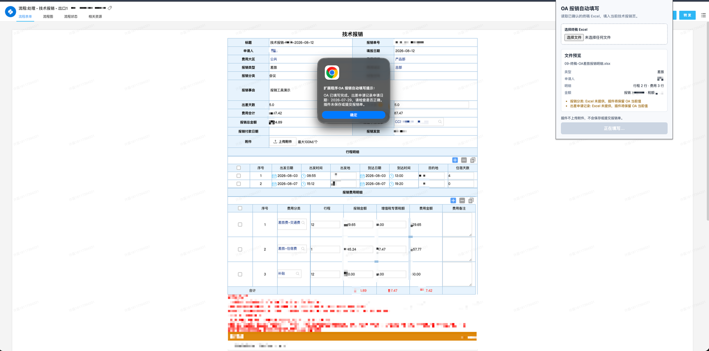
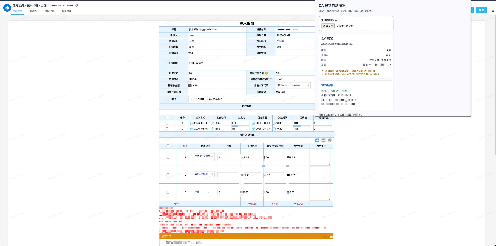

打开 OA
进入“处理 - 技术报销”页面，确认报销类型与 Excel 一致。
01
下载 ZIP，解压后加载到 Chrome。
保留完整目录。目录中应能直接看到 manifest.json。
在 Chrome 地址栏输入 chrome://extensions/。
打开“开发者模式”，点击“加载已解压的扩展程序”，选择解压目录。
在扩展程序菜单中固定“OA 报销自动填写”。
02
先打开 OA 完整表单，再从插件选择终稿 Excel。
进入“处理 - 技术报销”页面，确认报销类型与 Excel 一致。
点击插件图标，选择对应的 09-终稿-OA*.xlsx。
核对类型、申请人、行程数、费用行数和金额。
行程和费用分别选择“覆盖”“只新增”或“取消”。
点击“填入 OA”，等待完成提示。填写过程中不要操作页面。
核对申请记录、明细和合计，手动上传附件并提交。



03
行程明细和费用明细分别判断，互不影响。
清除该表已有数据，再按 Excel 填写。使用前确认旧数据不再需要。
保留已有数据，在后面增加 Excel 明细。
本次跳过该表，不做修改。
04
插件会填写行程、费用，并尝试选择出差申请记录。
插件按第 1 段行程的出发日期，选择该日期之前最近的一条申请记录。同日申请不选。
最近日期有多条记录，或没有符合条件的记录时，插件保留为空，由用户手动选择。
OA 选择记录后可能自动生成第 1 行行程。插件会复用该行，再补足剩余行程。


05
完成提示只代表字段已经写入，报销单仍需人工确认。
06
遇到错误时，插件会停止填写并显示原因。
确认当前页面是“处理 - 技术报销”的完整表单。列表页和创建页暂不支持。
检查 OA 的报销类型，重新选择同类型的终稿 Excel。
插件会停止，避免选错费用分类或申请记录。请先在 OA 中核对可选项。
检查费用明细是否全部写入，以及金额、税额和费用分类是否正确。
到扩展程序页重新加载插件，刷新 OA 页面，再重新选择 Excel。